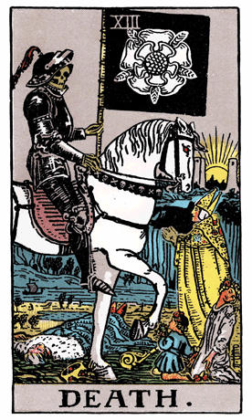

Our journey through the Rider-Waite Tarot Deck brings us to Death, a symbol of transformation, rebirth, and renewal. In this card, a skeletal figure in armor rides a white horse, carrying a black flag adorned with a white rose—a symbol of purity and new beginnings. The figure is followed by people from various walks of life, signifying the universality of the transformative process.
Death rides through a field of the dead, signifying the inevitability of change and the need for letting go of the old to make way for the new. The rising sun on the horizon symbolizes the promise of a new day and the potential for rebirth after the transformative process.
The armor worn by Death indicates invincibility and the indestructible nature of the soul. Death's horse moves steadily, emphasizing the unstoppable force of transformation that affects everything in its path.
In a tarot reading, Death often emerges as a symbol of profound change, letting go of the old, and embracing the transformative power of renewal. It suggests a time for releasing attachments, shedding old habits, and allowing for the natural cycle of transformation to unfold.
Death challenges individuals to confront their fears of change and the unknown. It symbolizes the death of the ego—letting go of false identities and embracing the authentic self. The white rose on the flag represents purity and the potential for new growth after the process of shedding the old.
The presence of Death in a reading does not necessarily signify physical death but rather a symbolic death and rebirth. It encourages individuals to trust the process of transformation and find the beauty in new beginnings that arise from letting go of the old.
From a psychological perspective, Death represents the process of shedding outdated beliefs, habits, and identities that no longer serve one's growth. It signifies the psychological death of old patterns, paving the way for self-renewal and personal transformation.
In a reversed position, Death may indicate resistance to change, fear of letting go, or a reluctance to embrace the transformative process. It could suggest a need for confronting fears, releasing attachments, and allowing the natural cycle of change to take its course. In such cases, the reversed Death serves as a gentle reminder of the inevitability and beauty of transformation.
Archetypally, Death aligns with the archetype of the Transformer—a figure that brings about profound change and renewal. Death embodies the cyclical nature of life, where endings give rise to new beginnings and transformation is a constant process.
Societally, Death encourages communities to embrace change, adapt to evolving circumstances, and recognize the potential for growth that arises from letting go of outdated structures. It emphasizes the importance of renewal and transformation in societal progress.
In conclusion, Death in the Rider-Waite Tarot Deck invites us to embrace transformation, release the old, and trust the process of renewal. It encourages individuals to confront the inevitability of change with courage, letting go of what no longer serves and welcoming the potential for new and vibrant beginnings.
```